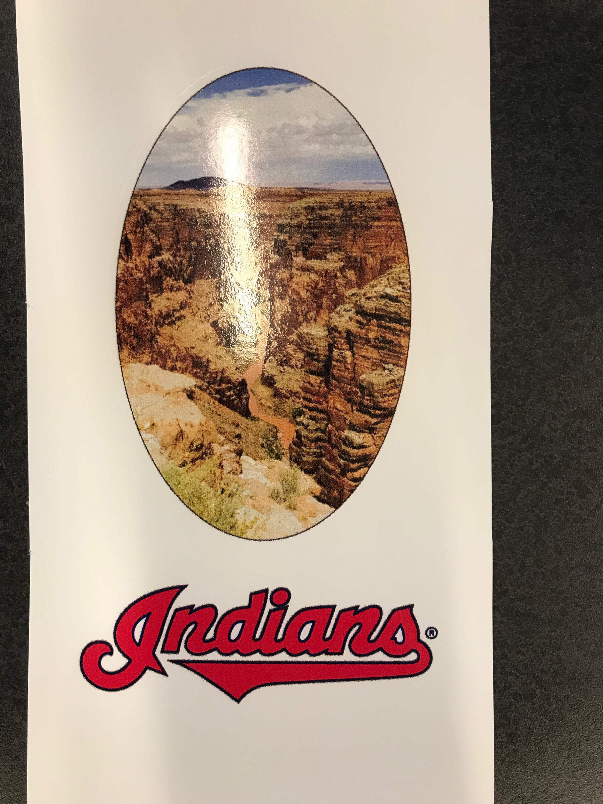

Rotation 6 | Vinyl, CNC Milling, Casting and Composites Assignment
The first assignment for this rotation was to make stickers using the Roland 540i. I chose to make a cutout picture of the grand canyon using
the powerclip inside tool. I then used the cut contour tool to print a sticker with the indians logo.
